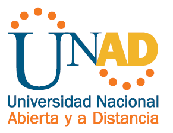

|
Objetivos:
Objetivo general
Identificar etiquetas, atributos y valores de html5
Objetivos especificos
• Identificar tipos de atributos
• Identificar etiquetas
• Poner en practica lo aprendido
Tematicas: HTML5 provee básicamente tres características: estructura, estilo y funcionalidad. Nunca fue declarado oficialmente, pero, incluso cuando algunas APIs (Interface de Programación de Aplicaciones) y la especificación de CSS3 por completo no son parte del mismo, HTML5 es considerado el producto de la combinación de HTML, CSS y JavaScript. Estas tecnologías son altamente dependientes y actúan como una sola unidad organizada bajo la especificación de HTML5. HTML está a cargo de la estructura, CSS presenta esa estructura y su contenido en la pantalla, hace el resto que es extremadamente significativo Recuperado de https://geodir.wordpress.com/2017/03/06/definicion-y-utilizacion-del-html5-css3/ |
 |